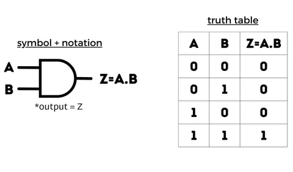
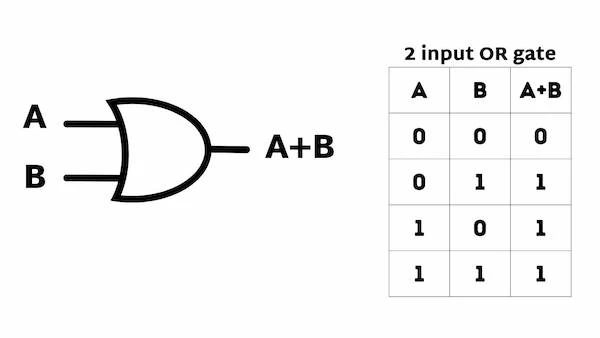
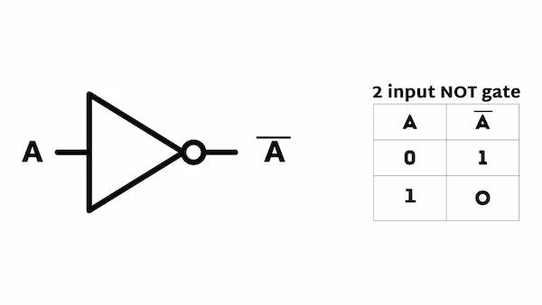
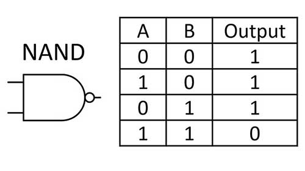
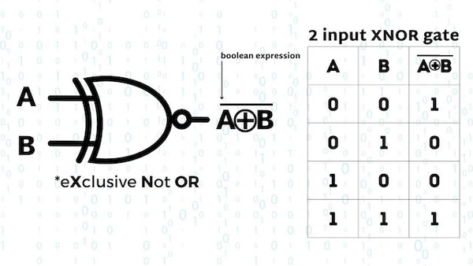

Chapter-6: Number System and Boolean Logic
Introduction
The number system is a way to represent numbers in different bases. Computers use binary (base-2), octal (base-8), and hexadecimal (base-16) systems for data processing. Boolean logic, on the other hand, is the foundation of digital circuits and programming, using logical operations like AND, OR, and NOT.
Number Systems
Number systems are categorized based on their base (radix). The most common number systems are:
- Decimal (Base-10): Uses digits 0-9. It is the most widely used number system.
- Binary (Base-2): Uses digits 0 and 1. It is the fundamental system for computers.
- Octal (Base-8): Uses digits 0-7. It is used as a shorthand for binary.
- Hexadecimal (Base-16): Uses digits 0-9 and letters A-F. It is used in memory addressing and color codes.
Complements
Complements are used in digital systems to simplify subtraction and logical operations. There are two types of complements:
- 1's Complement: The 1's complement of a binary number is obtained by flipping all the bits (0 becomes 1 and 1 becomes 0).
- 2's Complement: The 2's complement of a binary number is obtained by adding 1 to the 1's complement. It is widely used in computer systems to represent negative numbers.
Example: The 1's complement of 1010 is 0101.
Example: The 2's complement of 1010 is 0101 + 1 = 0110.
Boolean Logic
Boolean logic is a form of algebra where all values are either true (1) or false (0). It is used in programming, digital circuits, and decision-making processes.
Basic Boolean Operators
- AND: Returns true only if both inputs are true.
- OR: Returns true if at least one input is true.
- NOT: Inverts the input (true becomes false and vice versa).
Truth Tables
Truth tables are used to represent the output of Boolean operations for all possible input combinations.
| A | B | A AND B | A OR B | NOT A |
|---|---|---|---|---|
| 0 | 0 | 0 | 0 | 1 |
| 0 | 1 | 0 | 1 | 1 |
| 1 | 0 | 0 | 1 | 0 |
| 1 | 1 | 1 | 1 | 0 |
Logic Gates
Logic gates are physical devices that implement Boolean functions. They are the building blocks of digital circuits.
- AND Gate: Outputs true only if all inputs are true. 
- OR Gate: Outputs true if at least one input is true. 
- NOT Gate: Inverts the input. 
- NAND Gate: Combination of AND and NOT gates. 
- NOR Gate: Combination of OR and NOT gates.
- XOR Gate: Outputs true if the inputs are different.
- XNOR Gate: Outputs true if the inputs are the same. 

Applications of Logic Gates
Logic gates are used in:
- Arithmetic Circuits: Adders, subtractors, and multipliers.
- Memory Units: RAM and ROM.
- Control Systems: Traffic light controllers and industrial automation.
- Communication Systems: Encoders, decoders, and multiplexers.
Practice Questions
1. What is the binary equivalent of the decimal number 25?
Answer: 11001
2. What is the output of an AND gate if both inputs are 1?
Answer: 1
3. What is the output of a NOT gate if the input is 0?
Answer: 1
4. What is the truth table for an XOR gate?
Answer: XOR outputs 1 if the inputs are different, otherwise 0.